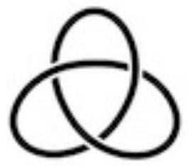

Topology General Exam
August 21, 2019
Instructions: This is a four hour exam. Your solutions should be legible and clearly organized, written in complete sentences in good mathematical style. All work should be your own-no outside sources are permitted-using methods and results from the first year topology course topics. Each problem is worth the same number of points.
Problem 1
Let
be a smooth map with the property that
is injective for every
.
a) Prove that
is a diffeomorphism provided that
.
b) Find a counterexample to part (a) in the case that
.
Problem 2
Let
be a connected smooth manifold of dimension
and let
be a smooth submanifold of dimension
.
a) Show that if
then
is connected.
b) Prove that if
then the inclusion
induces an isomorphism
for
any basepoint.
Problem 3
Let be a smooth compact manifold with nonempty boundary . Prove that there does not exist a retraction .
Problem 4
Let
denote the square
matrices with real entries.
a) Prove that
,
the matrices with determinant 1 , is a smooth submanifold of
.
b) Prove that
is not compact.
Problem 5
Let
be a 2 -complex consisting of one 0 -cell, two 1 -cells labelled
,
and a single 2 -cell attached along the loop
.
a) Find
.
b) Find
.
c) Show that
is homeomorphic to a smooth manifold.
Problem 6
Lef
be a continuous map.
a) Prove that if
has no fixed points then
is homotopic to the antipodal map.
b) Let
be a group acting freely on
,
where here
is even. Prove that
has order at most two. [Hint: construct a homomorphism to
using degree and argue that this map is injective.]
Problem 7
Let
be the 1 -point union of two copies of the projective plane,
.
a) Find a presentation for
and describe
as a direct sum of cyclic groups.
b) Prove that every continuous map
is nullhomotopic.
Problem 8
Let
be a circle that is smoothly embedded in
.
For example
could be the trefoil knot:

but your methods should not be specific to this case. Find the homology
groups
.